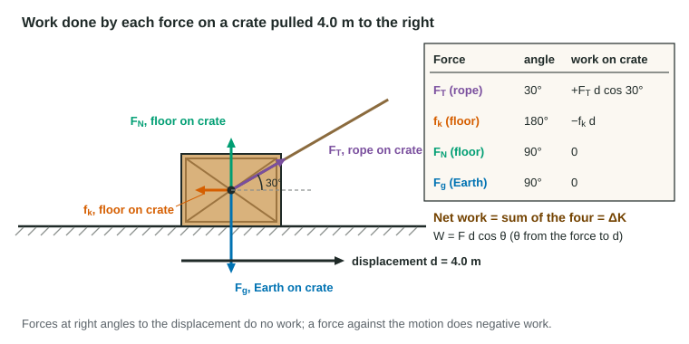

Kinetic energy tells you how much energy of motion an object has. Work tells you how a force changes it. In everyday speech, holding a heavy bag still for a minute is hard work. In physics it is no work at all, because nothing moves. This page defines work precisely, shows when it is positive, negative or zero, and connects it to kinetic energy with the work-energy theorem.
What work means
When a force acts on an object while the object moves, the force can move energy into or out of the object. That transfer is the work done by the force. For a constant force F and a straight displacement d, with θ the angle between the force and the displacement,
W = F d cos θ
Only the part of the force along the displacement, F cos θ, does work. Work is a scalar measured in joules: 1 J = 1 N·m, the same joule as kinetic energy. That is not a coincidence: work is energy on the move.
Positive, negative or zero

The angle θ decides the sign:
- θ less than 90°: the force has a component along the motion, cos θ is positive, and the work is positive. Energy enters the object. The rope pulling the crate forward does positive work.
- θ = 180°: the force points against the motion, cos θ = −1, and the work is negative. Energy leaves the object. Kinetic friction on a sliding crate always does negative work on it.
- θ = 90°: the force is perpendicular to the motion, cos 90° = 0, and the force does no work. The normal force and the gravitational force on a crate sliding across a level floor do none.
A force perpendicular to the velocity can still change the direction of motion, but it cannot change the speed. A ball whirled in a horizontal circle on a string on a smooth table keeps its speed because the string's pull, toward the center, is always at 90° to the velocity.
Worked example 1. A rope pulls a 25.0 kg crate 5.00 m to the right with a 60.0 N force at 25° above the horizontal. Kinetic friction of 35.0 N acts on the crate. Find the work done by each force and the net work.
Rope: W_T = F_T d cos 25° = (60.0 N)(5.00 m)(0.906) = 272 J.
Friction (θ = 180°): W_f = −(35.0 N)(5.00 m) = −175 J.
Normal force and gravitational force (θ = 90°): 0 J each.
Net work: W_net = 272 J − 175 J + 0 + 0 = 97 J.
The work-energy theorem
Add up the work done by every force on an object and you get the net work. The work-energy theorem says the net work equals the change in the object's kinetic energy:
W_net = ΔK = ½mv_f² − ½mv_i²
The reason is Newton's second law. The net force gives the object an acceleration, and the kinematic equation v² = v₀² + 2aΔx turns that acceleration over a distance into a change in v². Multiply by ½m and you have ΔK = F_net d.
Worked example 2. The crate in example 1 starts from rest. How fast does it move after the 5.00 m?
Work-energy theorem: W_net = ½mv² − 0.
v = √(2W_net/m) = √(2 × 96.9 J / 25.0 kg) = 2.78 m/s.
The theorem also works backward. If an object moves at constant speed, the net work on it is zero, even if several forces are doing work: a crate pulled up a ramp at steady speed has positive work from the rope and an equal total of negative work from gravity (and any friction).
Work from a force-position graph
Many forces change as an object moves: a stretched band pulls hard at first and less as it relaxes. Split the motion into thin slices; in each slice the force is nearly constant, and the work is F × Δx, the area of a thin strip. Add the strips and you get the area under the force-position graph.
Worked example 3. A band's force on a 0.50 kg cart is 10. N from x = 0 to 0.20 m, then falls in a straight line to zero at x = 0.50 m. How much work does it do, and how fast is the cart (from rest) at 0.50 m?
Area: rectangle (10. N)(0.20 m) = 2.0 J plus triangle ½(10. N)(0.30 m) = 1.5 J, so W = 3.5 J.
The band is the only force doing work along the level track, so ΔK = 3.5 J and v = √(2 × 3.5 J / 0.50 kg) = 3.7 m/s.
Area below the position axis (a force opposite the motion) counts as negative work.
Work as an energy transfer
Choose a system and draw its boundary. A force from outside the system that does work moves energy across that boundary: positive work brings energy in, negative work takes it out. This idea, energy transfer by work, is the key to keeping track of energy for the rest of the unit.
One warning about friction: the work it does depends on the path length, not only on where the object starts and ends. Drag a crate 3.0 m north and 3.0 m back, and friction does −f(6.0 m) of work, even though the crate ends where it started.
Common slips
| Slip | Fix |
|---|---|
| Using sin θ, or the whole force, for an angled pull | θ is from the force to the displacement: W = F d cos θ |
| Giving gravity or the normal force work on level ground | A force perpendicular to the motion does no work |
| Adding friction's work as positive | Friction opposes sliding: its work on the sliding object is negative |
| Using one force's work in the work-energy theorem | ΔK equals the net work, the sum over all forces |